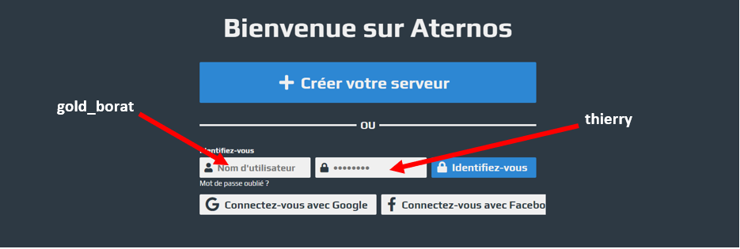
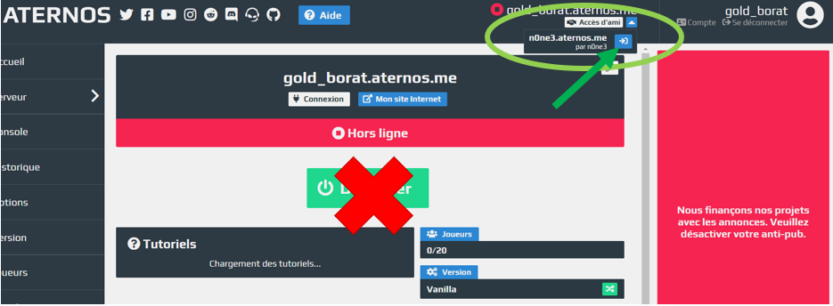
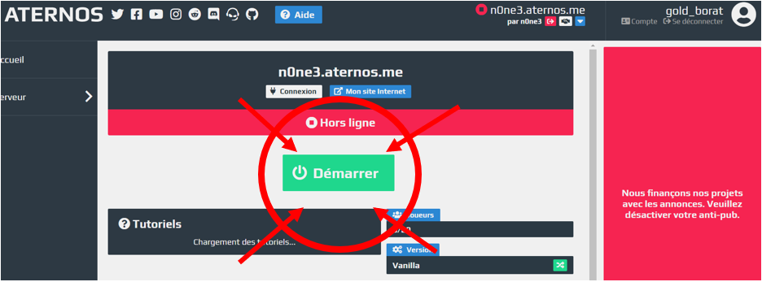
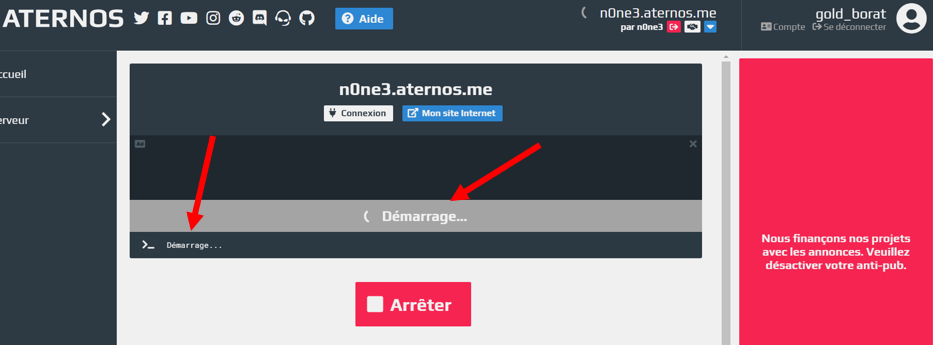
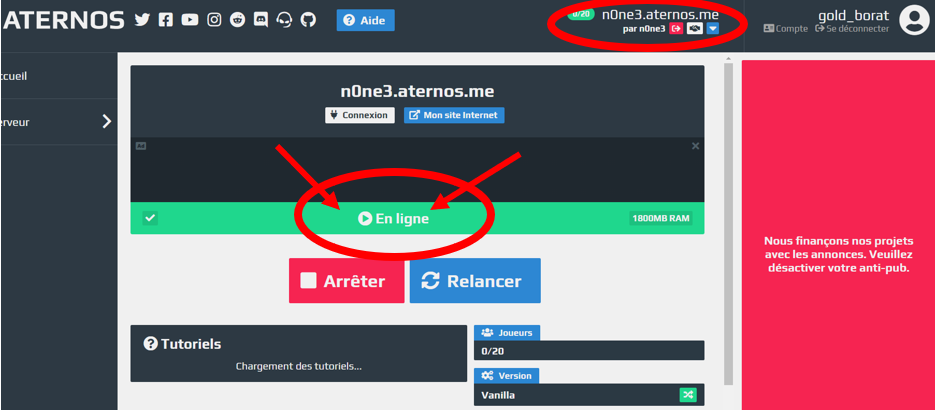

Rend toi sur le site https://aternos.org/go/, et rentre ces informations :
1. Ne clique SURTOUT PAS sur le gros boutton "Démarrer"
2. Tout au dessus il y a une petite flèche bleue à côté de "Accès d'ami", clique dessus pour dérouler le menu
3. Clique sur le petit bouton bleu à côté de "n0ne3.aternos.me"
Cette fois par contre, tu peux cliquer sur le gros bouton vert :P
Attendre que le serveur se démarre (prend ~5min)
ET VOILÀ !! Le serveur est démarré :)
Tu peux d'ailleurs le voir ici https://n0ne3.aternos.me/
ATTENTION : Il est possible qu'à l'avenir lorsque tu te rendra sur le site, tu arrives direct à la STEP 3, regarde bien que tu es sûr le bon serveur ;)